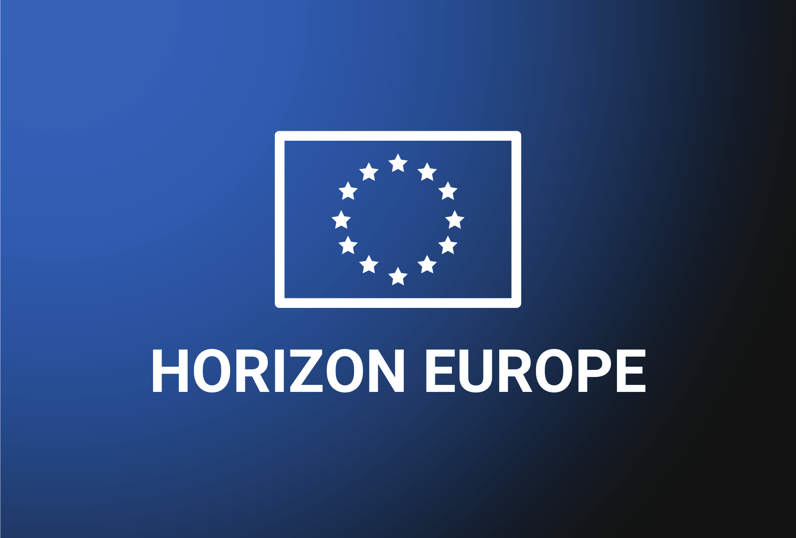

Quando uma empresa portuguesa com 40 colaboradores, dedicada ao desenvolvimento de sensores para agricultura de precisão, recebe um financiamento de 2,3 milhões de euros a fundo perdido para desenvolver um protótipo em parceria com uma universidade holandesa e uma PME espanhola, esse dinheiro vem do Horizonte Europa. E a maioria dos gestores portugueses não sabe que este programa existe, ou assume que é reservado a grandes centros de investigação.
É uma assunção errada. O Horizonte Europa foi desenhado precisamente para incluir empresas. E não empresas teóricas: empresas reais, com produtos, clientes e problemas concretos de inovação que precisam de financiamento para resolver.
Este guia explica como o programa funciona, que oportunidades cria e como uma empresa pode, na prática, aceder a ele.
O que é o Horizonte Europa
O Horizonte Europa é o programa-quadro da União Europeia para investigação e inovação, cobrindo o período 2021-2027. Sucede ao Horizonte 2020 e é, em termos absolutos, o maior programa de financiamento público à I&D do mundo. O orçamento total ascende a 95,5 mil milhões de euros, dos quais 5,4 mil milhões provêm do NextGenerationEU, o fundo de recuperação pós-pandemia.
O programa financia projetos colaborativos de investigação e inovação em praticamente todos os setores: saúde, digital, energia, clima, alimentação, transportes, segurança, espaço, materiais avançados. Não é um programa setorial. É um programa temático com uma ambição transversal.
A diferença fundamental em relação a programas nacionais como o Portugal 2030 é o nível de ambição e a exigência de colaboração transnacional. No Horizonte Europa, os projetos são tipicamente consórcios de entidades de vários países europeus. Uma empresa portuguesa não concorre sozinha. Concorre integrada num consórcio com parceiros complementares de outros Estados-membros.
Isto tem implicações práticas: obriga a trabalhar em rede, a dominar o inglês técnico, a ter capacidade de gestão de projetos internacionais. Mas também significa que a empresa acede a financiamento de escala incomparável com o que existe a nível nacional. Um projeto de investigação colaborativa pode facilmente ultrapassar os 5 milhões de euros, com taxas de financiamento que chegam aos 100% para investigação e 70% para inovação.
De onde vem e porque existe
O Horizonte Europa não nasceu do nada. É o resultado de um processo de consulta e avaliação que a Comissão Europeia conduziu ao longo de vários anos, mobilizando peritos, governos, universidades e o setor privado. A avaliação intercalar do Horizonte 2020 revelou duas coisas: o programa anterior tinha gerado resultados de investigação de qualidade, mas a transferência desses resultados para o mercado era insuficiente. A inovação ficava presa nos laboratórios.
Em 2017, o chamado relatório Lamy, formalmente intitulado "Lab-Fab-App", propôs uma reformulação profunda. A mensagem central era simples: a Europa precisa de investir mais em investigação, mas precisa sobretudo de garantir que essa investigação chega às empresas e se transforma em produtos, serviços e empregos. O relatório recomendava duplicar o orçamento e introduzir uma lógica orientada por missões.
A professora Mariana Mazzucato, economista da University College London, foi uma das vozes mais influentes neste processo. O seu trabalho sobre política de inovação orientada por missões convenceu a Comissão a criar um mecanismo novo dentro do programa: as Missões da UE, desafios concretos com metas mensuráveis que a investigação europeia deve ajudar a resolver.
A proposta formal da Comissão surgiu em 2018. O Parlamento Europeu e o Conselho chegaram a acordo provisório em março e abril de 2019, e o acordo político final, incluindo o orçamento definitivo de 95,5 mil milhões, foi fechado em dezembro de 2020. O programa entrou em vigor em 2021.
Os três pilares do programa
O Horizonte Europa está organizado em três pilares, cada um com uma lógica distinta. Compreender esta estrutura é essencial para saber onde uma empresa se pode posicionar.
Pilar I: Ciência de Excelência
Este pilar financia investigação fundamental, sem aplicação comercial imediata. É o domínio do Conselho Europeu de Investigação (ERC), das bolsas Marie Skłodowska-Curie e das infraestruturas de investigação. Para a maioria das empresas, este pilar não é o ponto de entrada direto. Mas importa conhecê-lo por duas razões: primeiro, porque as bolsas ERC podem financiar investigadores que depois se tornam cofundadores de spin-offs; segundo, porque as infraestruturas de investigação financiadas neste pilar podem ser utilizadas por empresas em regime de acesso aberto.
Pilar II: Desafios Globais e Competitividade Industrial
Este é o pilar mais relevante para empresas. Está organizado em seis clusters temáticos que cobrem as grandes prioridades europeias. Cada cluster abre concursos específicos (chamados "calls") ao longo do programa.
| Cluster | Tema | Exemplos de áreas |
|---|---|---|
| 1 | Saúde | Diagnóstico, doenças raras, saúde digital, pandemias |
| 2 | Cultura, Criatividade e Sociedade Inclusiva | Democracia, património, indústrias culturais |
| 3 | Segurança Civil | Cibersegurança, proteção de infraestruturas, gestão de crises |
| 4 | Digital, Indústria e Espaço | IA, robótica, materiais avançados, fabrico, espaço |
| 5 | Clima, Energia e Mobilidade | Renováveis, hidrogénio, baterias, transportes limpos |
| 6 | Alimentação, Bioeconomia e Recursos Naturais | Agricultura sustentável, mar, biodiversidade, economia circular |
É neste pilar que se concentra a maior fatia do orçamento e onde as empresas, especialmente PMEs com capacidade de I&D, encontram as oportunidades mais diretas. Os projetos típicos envolvem consórcios de 8 a 15 parceiros de 5 a 10 países, com durações de 3 a 5 anos.
Pilar III: Europa Inovadora
O terceiro pilar é talvez o mais relevante para empresas de menor dimensão. Inclui o Conselho Europeu de Inovação (EIC), criado especificamente para financiar inovação disruptiva. O EIC tem dois instrumentos principais:
- EIC Pathfinder: para investigação visionária em fase inicial, com potencial de criar tecnologias radicalmente novas
- EIC Accelerator: para startups e PMEs com inovações prontas para escalar, combinando subvenção (até 2,5 milhões de euros) com investimento em capital (até 15 milhões de euros)
O EIC Accelerator é, provavelmente, o instrumento mais atrativo para empresas portuguesas com produtos inovadores perto do mercado. Uma startup de deeptech que precisa de capital para escalar pode receber, num único processo, financiamento a fundo perdido e investimento de capital gerido pelo fundo do EIC. É um modelo único na Europa.
As cinco Missões da UE
Uma das inovações mais discutidas do Horizonte Europa é o conceito de "Missões". Inspiradas no modelo da missão Apollo, são desafios concretos com objetivos mensuráveis para 2030. Não são apenas programas de financiamento. São compromissos políticos da Comissão Europeia para resolver problemas específicos, mobilizando vários instrumentos em simultâneo.
2. Cancro, com o objetivo de melhorar a vida de mais de 3 milhões de pessoas até 2030.
3. Oceanos, mares e águas saudáveis e restaurados.
4. Cidades inteligentes e neutras em carbono, com 100 cidades europeas como laboratório.
5. Saúde dos solos e alimentação, com um pacto para o solo até 2030.
Para empresas, as missões são relevantes porque concentram financiamento em problemas definidos. Uma empresa que trabalha em tecnologia de monitorização da qualidade do solo, por exemplo, pode encontrar nas missões um enquadramento natural para o seu projeto de inovação. A missão não financia diretamente. Funciona como um chapéu que orienta e prioriza os concursos dentro dos clusters do Pilar II.
Como funciona o acesso ao financiamento
O processo de candidatura ao Horizonte Europa é diferente do que a maioria das empresas portuguesas conhece nos programas nacionais. Não é mais difícil, necessariamente. É diferente.
O ciclo começa com a publicação dos Programas de Trabalho, documentos que detalham os concursos abertos para cada cluster e instrumento num dado período, tipicamente bienal. Cada concurso especifica o tema, o orçamento disponível, o tipo de ação (investigação, inovação, apoio à coordenação), o número esperado de projetos e os critérios de avaliação.
Uma empresa que identifique um concurso relevante precisa, na maioria dos casos, de integrar um consórcio. Isto significa encontrar parceiros noutros países, negociar papéis e orçamentos, e submeter uma proposta conjunta. A Comissão disponibiliza ferramentas para facilitar esta procura de parceiros, e os Pontos de Contacto Nacionais (em Portugal, a ANI, Agência Nacional de Inovação) oferecem apoio gratuito.
O que a avaliação valoriza
As propostas são avaliadas por painéis independentes de peritos em três critérios: excelência científica e técnica, impacto esperado e qualidade da implementação. O peso de cada critério varia conforme o tipo de ação. Nas ações de inovação mais próximas do mercado, o impacto e a exploração comercial pesam mais do que a excelência científica pura.
Um aspeto que distingue o Horizonte Europa dos programas nacionais é a simplicidade relativa da justificação de custos. O programa utiliza um modelo de custos com taxa fixa de 25% para custos indiretos, o que elimina a necessidade de justificar ao cêntimo as despesas gerais. Para empresas habituadas à burocracia do Portugal 2030, este detalhe pode parecer menor. Não é.
Parcerias Europeias: um modelo dentro do modelo
O Horizonte Europa introduziu um sistema reforçado de Parcerias Europeias, que são estruturas de cofinanciamento entre a Comissão e consórcios de Estados-membros, indústria ou outras entidades. Existem três tipos: cofinanciadas, coprogramadas e institucionalizadas.
Para uma empresa, o que importa saber é que muitas destas parcerias abrem os seus próprios concursos, frequentemente com regras simplificadas e com foco em setores específicos. A Clean Hydrogen Joint Undertaking, por exemplo, financia projetos de hidrogénio verde. A Key Digital Technologies (agora Chips JU) financia projetos em semicondutores e eletrónica avançada. A Innovative Health Initiative financia projetos na fronteira entre saúde e tecnologia.
Estas parcerias movimentam dezenas de milhares de milhões de euros ao longo do programa e são frequentemente subestimadas por empresas que se focam apenas nos concursos "standard" do Horizonte Europa.
O que isto significa para empresas portuguesas
Portugal tem uma relação ambivalente com o Horizonte Europa. Por um lado, as instituições de investigação portuguesas, universidades e laboratórios participam ativamente e com resultados acima da média em várias áreas. Por outro, a participação empresarial é significativamente inferior ao que a dimensão do tecido económico justificaria.
As razões são conhecidas. Falta de experiência em projetos internacionais, dificuldade em encontrar parceiros, percepção de que o programa é exclusivo para grandes empresas ou centros de investigação, e a barreira linguística (todas as propostas são escritas em inglês). Nenhuma destas razões é intransponível.
Quem pode candidatar-se
Qualquer entidade legal estabelecida num Estado-membro da UE ou num país associado ao programa pode participar. Isto inclui empresas de qualquer dimensão, universidades, centros de investigação, organizações sem fins lucrativos, administração pública. As PMEs são explicitamente incentivadas e o programa tem metas quantitativas para a sua participação.
O EIC Accelerator é aberto a candidaturas individuais de empresas, sem necessidade de consórcio. Uma startup portuguesa com uma inovação deeptech pode candidatar-se sozinha. Os restantes instrumentos do Pilar II requerem consórcio, tipicamente com um mínimo de três entidades de três países diferentes.
A Agência Nacional de Inovação como porta de entrada
A ANI funciona como Ponto de Contacto Nacional para o Horizonte Europa em Portugal. Oferece apoio gratuito a entidades que queiram candidatar-se: ajuda na identificação de concursos relevantes, revisão de propostas, procura de parceiros internacionais e informação sobre regras de participação. É um recurso subutilizado pela maioria das empresas portuguesas e é, sem dúvida, o primeiro contacto que qualquer empresa interessada deve fazer.
Horizonte Europa vs. Portugal 2030: programas diferentes, lógicas diferentes
A tentação de comparar o Horizonte Europa com o Portugal 2030 é natural, mas enganadora. São programas com objetivos, escalas e culturas de execução completamente distintos.
| Dimensão | Horizonte Europa | Portugal 2030 |
|---|---|---|
| Escala | Europeia, projetos transnacionais | Nacional/regional |
| Consórcio | Obrigatório (exceto EIC Accelerator) | Individual ou consórcio nacional |
| Língua | Inglês | Português |
| Taxa de financiamento | 70%-100% | 25%-85% (varia por tipologia) |
| Foco | Investigação e inovação na fronteira | Modernização, competitividade, coesão |
| Complexidade da candidatura | Alta, mas processo transparente | Média, com forte componente administrativa |
| Custos indiretos | 25% taxa fixa (flat rate) | Variável, justificação detalhada |
Uma empresa não tem de escolher entre os dois. Pode, e deve, utilizar ambos de forma complementar. O Portugal 2030 pode financiar a modernização de uma linha de produção. O Horizonte Europa pode financiar o desenvolvimento de uma tecnologia nova que depois será integrada nessa mesma linha. São instrumentos que se articulam, não que competem entre si.
Como aplicar este conhecimento
O Horizonte Europa não é um programa para todas as empresas. É um programa para empresas que fazem, ou querem fazer, investigação e inovação com ambição internacional. Se a sua empresa desenvolve tecnologia própria, tem capacidade de I&D interna (mesmo que pequena) e opera num setor alinhado com as prioridades europeias, o programa é uma fonte de financiamento que não pode ignorar.
O primeiro passo concreto é contactar a ANI e pedir uma sessão de orientação. É gratuito e não compromete. O segundo passo é mapear os concursos abertos no portal Funding & Tenders da Comissão Europeia e verificar se algum se alinha com a atividade de I&D da empresa. O terceiro é começar a construir rede: participar em eventos de matchmaking, contactar universidades e centros de investigação que trabalham na mesma área, e identificar parceiros potenciais noutros países.
Para empresas que nunca participaram, o EIC Accelerator é frequentemente o melhor ponto de entrada, porque permite candidatura individual e combina subvenção com capital. Para empresas com experiência em projetos colaborativos, os concursos do Pilar II oferecem financiamento substancial para desenvolver tecnologia em consórcio.
O programa tem ritmo próprio. Os concursos abrem em datas específicas, com prazos de submissão que exigem preparação antecipada. Uma candidatura competitiva ao Horizonte Europa demora tipicamente 3 a 6 meses a preparar. Quem começa hoje está a posicionar-se para os concursos do próximo programa de trabalho.
Achou o artigo relevante? Partilhe com a sua rede de contactos. Explore também o nosso arquivo para mais conteúdos sobre inovação, tecnologia, ciência aplicada e empreendedorismo.